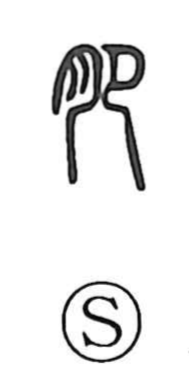

肥

Uncategorized
Kun: koeru, koyasu, koyashi, koe | On: hi
to grow fat ・ fatten ・ fertile ・ abundant ・ prosperous
Explanation
Formed from the flesh sign (nikuzuki) and setsu, the kneeling person, the ancient graph pictures the flesh of the thigh swelling when one kneels. From this vivid image it came to mean to grow fat or to fatten, and by extension rich, abundant, and prosperous. The sense extends beyond people to things, as in hiyoku for soil that has grown fat and thus is fertile. A related graph, 盈 (ei, to be full), likewise shows a plump thigh as someone sits bathing in a basin, reinforcing the idea of fullness.